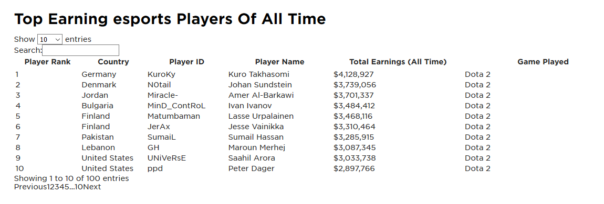

Want to know more about ESports in general?
How are teams created within esports?
The way teams are formed in esports would be for a Team Manager to put out an advertisement for a vacant position within their respective team, then, players interested in joining would send in an application to join. The Team Manager would review their application to see if they would make a good fit for the team. If they are, they are reserved a time slot to play a game or a few to test their capacity as an individual- and team-player. If the applicants skills are up to the standard of the Team Manager, they will be invited to form the esport team.
What are the average earnings of esports players?
Typically, esports players would have to win games to earn money, but with esport becoming on of the most sought after positions, players can expect to earn between 3.000 and 5.000 for their monthly salary, and that’s before they even win.
How does one usually enter an esports event?
For esports events, customers are required to buy their tickets online or at the gate when they arrive. Usually it is best to buy your tickets online as they typically all sell out before the day comes.
How much money does an E-Sports event generate?
- Even since 1998 E-Sports tournament prize winnings have been increased by $151,097,817.
- The esports industry experienced a similar growth rate of 2017-2018 – (a 31% increase) and the expected total yearly player winnings to surpass $195,000,000 in 2019.
- The highest earning esports player of all time ‘KuroKy’ – real name Kuro Takhasomi, has earned over $4,000,000 in prize money.
- Keep in mind a prize pool in an E-Sports event will be spread about among all teams so even the people in last place gain some money. About 40% – 50% of the pool will go to first place.
- Because of the rise in popularity of E-Sports the prize winnings for the players and therefore salary for employees of the company sponsoring or who own the team increases as well.
How much money do teams averagely earn?
Prize Winnings/Salaries
- E-Sports players salary comes from the prize winning the gain for E-Sport events they play in and what place they come in, in said event.
- The closer to first place you are, the higher the percentage the prize pool won.
- The amount of prize money depends on how big the event in question is. Because for some smaller events the prize pool could be $100 or lower but is spread out upon the teams. So the winners might only get $50.
- But bigger events could go into the hundreds of thousands and even millions. Meaning a team would only need to win one event a year. And the usual big events that have such a large prize only happen about once a year.
- E-Sports players earn more than a lot of physical athletes these days, because of the rise of popularity of E-Sports, it is now in much higher demand.
- E-Sport offers regular salaries to team participants, with average salaries in the $3,000-to-$5,000 monthly in gaming centres like China and the U.S. But more skilled and demanded players can earn much more, up to $15,000 for a single competition.
Sponsorships/Streaming
- With major global brands in the picture, eSports is collecting in the money from sponsorships.
- Some of that money goes into competition and cash prizes themselves, while some go directly to team ownership.
- This is the case with Audi and its sponsorship of Australia’s Counter Strike franchise.
- The sponsors comprise $456 million of the overall $1.1 billion in eSports revenues.
- Online competition has also spawned a highly effective and organized network of digital streamers who can earn $4.99 per month per viewer.
- Streaming services can show E-Sports competitions via platforms like Twitch.
- And since these services make use of advertisements, the money can go to E-Sports Arena.
Media Rights/Merchandising and tickets
- According to industry statistics, media rights encompass one-fifth of revenues earned by eSports companies and players.
- Mostly the media rights money is paid out to event organizers and game developers, who pass on some of the cash to teams and players in the form of prize money and bonuses.
- Apparently the media rights comprised $251 million of the $1.1 billion total E-Sports revenue in 2019.
- At $103 million in revenues in 2019, merchandising and tickets are among the top tier leaders in E-Sports pay-outs.
- Merchandising usually follows the rise of a sport, as it historically has on the PGA tour, in the NFL and NBA, and in other popular professional sports leagues.
- So both merchandising and ticket revenues will climb as gaming continues to flourish on a global stage.
Who are the Top ESports players?
JD Blog. (2019). Esports Earnings: How Much Do Esports Players Make? | JD Sports. [online] Available at: https://blog.jdsports.co.uk/esports-earnings-how-much-do-players-really-make/.
Job roles created because of E-Sports
Professional Player
Professional Players are usually signed to a particular team and will compete in different tournaments for prize money. The wages vary, but the world’s top players could potentially earn up to hundreds of thousands of pounds. This is also taking into consideration their wage and sponsorship deals.
Shoutcaster/host
- Shoutcasters/host are the E-sports equivalent of a sports commentator.
- There are usually two types of these Shoutcasters:
- There's play-by-play ones that commentate as they event goes on.
- There is also colour casters who analyse a noteworthy part of the game.
Team manager/Owner
Team managers are be responsible of all kinds of things, from arranging player contracts, finding new talent, motivating and instructing existing staff and players, entering tournaments, dealing with travel and accommodation, and developing the team’s brand, strategy and partnerships.
Tournament admin/referee
Admins and referees ensure an esports tournament runs smoothly and that all rules and regulations are not being broken and are followed.
They may have to deal with player disputes, work with event and broadcast staff to make sure everything runs on time.
Content creator/Journalist
Esports teams and other companies may hire their own content creators, who may be required to write news, edit videos, handle copywriting, conduct interviews and write about partnerships and sponsorships.
Marketing/PR Executive
- PR executives will work with journalists and influencers to secure positive and high-profile coverage for their brand.
- Marketing executives may be responsible for maintaining a budget, placing advertisements and signing sponsorships to grow their fanbase or customer-base.
Community/Social Media manager
Community managers are responsible for looking after the fanbase or customer-base of a particular game, company or team.
They may be required to produce motivating and engaging content for the community, track the amount of fans, handle promotions, competitions and other initiatives, gather feedback and relay it to other teams within the company.
Sales/Partnership manager
Sales executives or managers may be responsible for ticket sales, sponsorship agreements, hardware sales, growing their customer-base or fanbase, and coming up with new ideas to generate excitement around a brand and generate revenues.
ESports Agent
Esports agents will aim to get the possible contract and deals for their players. They will negotiate on the player’s behalf, manage partnerships and present players with different opportunities in order to grow their stature and revenues.
Event/Production executive
- These managers will be responsible for organising and overseeing live or online esports events.
- They may be required to develop strategies, work with different departments and partners on content and ensure everything is in place to oversee a successful event.
Production/Broadcasting
People in the broadcast and production department at an esports event will be working on a wide range of activities, from lighting and camera work, streaming services set up and any screens/projectors/speakers, and will have to work to a set schedule.
Legal/finance
Lawyers, legal experts, accountants and solicitors will usually help esports teams and companies produce contracts, settle disputes, restructure and work on any complicated legal matters.
What rules do players follow in the esport games?
All players must follow a code of conduct:
- Compassion: treat others as you would be treated.
- Integrity: be honest, be committed, play fair.
- Respect: show respect to all other humans, including teammates, competitors, and event staff.
- Courage: be courageous in competition and in standing up for what is right.
Participants must not engage in harassment or hate speech in any form. This includes, but is not limited to:
- Hate speech, offensive behavior, or verbal abuse related to sex, gender identity and expression, sexual orientation, race, ethnicity, disability, physical appearance, body size, age, or religion.
- Stalking or intimidation (physically or online).
- Spamming, raiding, hijacking, or inciting disruption of streams or social media.
- Posting or threatening to post other people’s personally identifying information (“doxing”).
- Unwelcome sexual attention. This includes, unwelcome sexualized comments, jokes, and sexual advances.
- Advocating for, or encouraging, any of the above behavior.
Participants must also not cheat, this includes:
- Multiple accounts are forbidden, each player must have only one.
- TimeZones and Time must be set to the player current time as to not take advantage of real-time based systems.
- Constantly changing the Team or players name to confuse opponents is forbidden.
- Use of Programs/Hacks to Modify or Circumvent the Anti-Cheat to improve their performance.
Do different games have different rules?
Most Follow the above rules of conduct but may have some extra rules for the specified game, for example:
- Teams must not add or drop players in certain time period before tourney
- Players may not bring in their own Headsets, Earphones or Mics.
- Hand warmers are provided
What is the average age range of esport games?
18-30
How do esport events combat cheaters?
With the ability for anyone to compete in an ESports tournament, it is of no disregard that cheating can take place through these events, especially with the amount of money involved. Event hosts have to undertake multiple measures to ensure the integrity of the competition.
However, in 2008 during a German ESL Pro Series event, a player was able to play using an aimbot and a wallhack. These gave the player incredible advantages against other players. Aimbot allows the player's mouse to automatically lock on enemy players and wallhack makes walls non-collidable and transparent. The player was caught and given a two year ban because of this.
Most players' screens are recorded and are able to be monitored second by second to ensure if anything does not seem right, the appropriate action can be taken. Any equipment used by each player is installed by the event hosts and are not able to be tampered with by players before the event.
Contracts and risk of being banned from tournaments is already doing its job to deter cheaters, as well as the additional security taken it is rare to see a live event be subject to cheating.
Ashton, G. (2019). Cheating in Esports – How Is It Done, and How Is It Dealt With? [online] The Esports Observer｜home of essential esports business news and insights. Available at: https://esportsobserver.com/cheating-in-esports/ [Accessed 29 Nov. 2020].
Do people prefer watching E-Sports digitally or at a venue?
E-Sport events are available to viewership online and through a venue. Although with the current global pandemic, in person attendance is probably not going to go back to normal for quite some time.
Gaming is an easy way for people to enjoy themselves while mostly at the comfort of their own home so it would make sense for people to prefer viewing E-Sport events at home rather than at the venue it takes place in. Tickets can also be expensive, and when you can watch something for free online it is more likely people will opt for that.
Unless you’re a die hard fan, seeing an E-Sport event in person doesn’t seem like an option that can hugely benefit the consumer. Most gamers are of younger age and would need a responsible guardian to be present, who may not enjoy watching it as much. Events happen all over the world and this also brings in to play the cost of travelling to view an event.
On the other hand, unlike most sporting events, E-Sport events can span through an entire weekend to a week and it can be considered worthwhile to some to view it in person.
What is the most effective way to advertise an esports event?
While doing research for our own event I looked into many different ways of advertisement and the target market for said advertisement (which will be covered next), I found that the best method of advertisement is both through sites like Twitch. Twitch and sites like Twitch are mostly dedicated to the online streaming of games and pull in a massive audience across the world, for an idea of how massive the userbase is of twitch, it is reported by businessofapps.com that Twitch has a streamer base of 3.8 million (as of February 2020), and 15 million unique daily viewers and monthly users at 140 million. That is a massive user base that is mostly dedicated to gaming, making it a prime source of advertisement.
What is the target market for an esports event?
So leading off of this; what is the target market if we were to advertise on Twitch? Well according to this secondary research source I have gathered: “Twitch is an overwhelmingly male-dominated platform. In September 2017 Twitch itself reported ComScore statistics which showed that men made up 81.5% of its userbase.” However in the last couple years Twitch has begun to “show a less drastic gender split, with 65% male to 35% female.” Overall this means that catering to specific genders shouldn’t be as much as a focus, and that advertisement and the way the event is run shouldn’t lean to any particular gender, however age is another story. The age split on Twitch is extremely dramatic: “stats show a greater percentage of Twitch users falling into younger age categories, with 73% in total falling into the two brackets aged under 35. The greater share (41%) are 16-24, with around a third aged 25-34.” This directly shows that the people we should be advertising and catering this event to are the younger audience and avoiding the older audience as they’re very small in comparison.